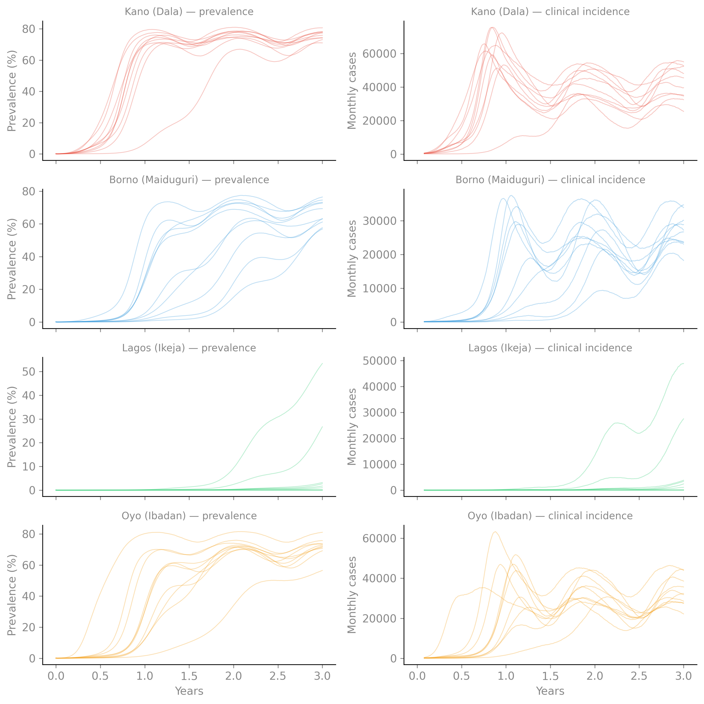

$ camdl inspect malaria_snt.camdl
malaria_snt
compartments 6 base × 4 district × 3 age = 72 expanded
transitions 10 base → 172 expanded (+ 0 filtered by where)
parameters 16 declared (R0_kano_dala: positive, R0_borno_maiduguri: positive, R0_lagos_ikeja: positive, R0_oyo_ibadan: positive, sigma: rate, gamma_D: rate, gamma_A: rate, gamma_T: rate, omega_P: rate, phi_u5: probability, phi_5_15: probability, phi_adult: probability, c_A: probability, rho_tx: probability, kappa: rate, alpha: probability, phi_season: real, mu: rate, I0_kano_dala: count, I0_borno_maiduguri: count, I0_lagos_ikeja: count, I0_oyo_ibadan: count)
tables 3 (pop: district × age, adj: district × district, phi_clin: age)
let bindings 5 (N[d in district, a in age], N_total[d in district], I_eff[d in district], D_bar, beta[d in district])
dimensions district = [kano_dala, borno_maiduguri, lagos_ikeja, oyo_ibadan], age = [under5, age_5_15, over15]
observations 0 streams
interventions 0 (0 active by default)
warning[W311]: dimension 'district' from data/district_age_pop.tsv column "district": 8 duplicate rows collapsed to 4 unique levels (of 12 total)Malaria: Sub-National Tailoring Model
This vignette builds a malaria transmission model for sub-national tailoring — the operational use case where district-level data (populations, endemicity, intervention coverage) drives model calibration and scenario analysis. The model exercises most of camdl’s dimension and table features in a realistic epidemiological context.
Model structure
The model uses a Ross-Macdonald reduced form (no explicit mosquito compartments) with a clinical/asymptomatic infection split:
S → E → D → T → P → S (clinical: detected, treated, prophylaxis)
↘ A → S (asymptomatic: undetected, slow clearance)- D (clinical disease): symptomatic, seeks treatment. This is the observed quantity — confirmed cases at health facilities.
- A (asymptomatic): low-density parasitemia, not seeking care. The large asymptomatic reservoir sustains transmission between seasonal peaks.
- T (on treatment): ACT course (~3 days).
- P (prophylactic protection): post-ACT lumefantrine prophylaxis (~28 days).
The fraction progressing to clinical vs. asymptomatic infection is age-dependent — younger children have less acquired immunity and a higher clinical fraction. This is the central age-structure effect in malaria epidemiology.
Dimensions and data
The model is stratified by district (4 Nigerian LGAs, data-derived) and age (under-5, 5–15, over-15):
6 base compartments × 4 districts × 3 age groups = 72 expanded compartments. 10 transition templates expand to 172 transitions.
External data tables
District populations and spatial connectivity are loaded from TSV files. The age-dependent clinical fraction uses a parameterized inline table:
$ camdl inspect malaria_snt.camdl --tables
pop [district × age] loaded: data/district_age_pop.tsv
│ under5 age_5_15 over15
│ kano_dala 87300 130950 266750
│ borno_maiduguri 62100 93150 189750
│ lagos_ikeja 111600 167400 341000
│ oyo_ibadan 73800 110700 225500
adj [district × district] loaded: data/spatial_adj.tsv
│ kano_dala borno_maiduguri lagos_ikeja oyo_ibadan
│ kano_dala 0 0.002 0 0.001
│ borno_maiduguri 0.002 0 0 0
│ lagos_ikeja 0 0 0 0.005
│ oyo_ibadan 0.001 0 0.005 0
phi_clin [age] inline
│ under5 phi_u5
│ age_5_15 phi_5_15
│ over15 phi_adult
warning[W311]: dimension 'district' from data/district_age_pop.tsv column "district": 8 duplicate rows collapsed to 4 unique levels (of 12 total)The pop table is joint district × age — 12 entries from the population file. The adj matrix is sparse (only 6 of 16 district pairs are connected). The phi_clin table holds parameter references (phi_u5, phi_5_15, phi_adult) resolved at runtime — the clinical fraction is estimable during inference.
The model source
malaria/malaria_snt.camdl
# Sub-national tailoring malaria model
#
# Ross-Macdonald reduced form (no explicit mosquito compartments).
# Clinical vs. asymptomatic infection pathway, age-structured,
# spatial coupling between districts, seasonal transmission.
#
# Structure:
# S → E → D → T → P → S (clinical: detected, treated, prophylaxis)
# ↘ A → S (asymptomatic: undetected, slow clearance)
#
# Calibration targets: monthly clinical incidence by district.
# Key dimensions: district (from data), age (inline).
time_unit = 'days
# ── Compartments ────────────────────────────────────────────────────
compartments { S, E, D, A, T, P }
# D = clinical disease (symptomatic, seeks treatment)
# A = asymptomatic infection (not seeking care, low-density parasitemia)
# T = on treatment (ACT, ~3 days)
# P = prophylactic protection post-ACT (~28 days for lumefantrine)
# ── Dimensions ──────────────────────────────────────────────────────
dimensions {
district = read("data/district_age_pop.tsv", column = "district")
age = [under5, age_5_15, over15]
}
stratify(by = district)
stratify(by = age)
# ── Parameters ──────────────────────────────────────────────────────
parameters {
# Transmission — indexed by district (different endemicity)
R0[district] : positive in [1.0, 12.0]
# Progression rates
sigma : rate in [0.05, 0.2] # E → D/A (1/EIP, ~7-14 days)
gamma_D : rate in [0.1, 0.5] # D → T (clinical → treatment, ~3-7 days)
gamma_A : rate in [0.002, 0.02] # A → S (asymptomatic clearance, ~60-300 days)
gamma_T : rate in [0.2, 0.5] # T → P (treatment duration, ~3 days)
omega_P : rate in [0.02, 0.07] # P → S (prophylaxis waning, ~15-40 days)
# Clinical fraction — age-dependent (immunity increases with age)
phi_u5 : probability in [0.5, 0.9] # fraction clinical, under-5
phi_5_15 : probability in [0.2, 0.6] # fraction clinical, 5-15
phi_adult : probability in [0.05, 0.3] # fraction clinical, over-15
# Relative infectiousness of asymptomatics
c_A : probability in [0.1, 0.5]
# Treatment-seeking probability (of clinical cases)
rho_tx : probability in [0.2, 0.8]
# Spatial coupling
kappa : rate in [0.0, 0.01]
# Seasonality
alpha : probability in [0.1, 0.8] # seasonal amplitude
phi_season : real in [0.0, 365.0] # peak day of year
# Background demography
mu : rate in [1e-5, 5e-4]
# Seeding
I0[district] : count in [1, 500]
}
# ── Tables ──────────────────────────────────────────────────────────
tables {
pop : district × age = read("data/district_age_pop.tsv")
adj : district × district = read("data/spatial_adj.tsv", default = 0.0)
# Age-dependent clinical fraction
phi_clin : age = [phi_u5, phi_5_15, phi_adult]
}
# ── Derived quantities ──────────────────────────────────────────────
let N[d in district, a in age] = S[d,a] + E[d,a] + D[d,a] + A[d,a] + T[d,a] + P[d,a]
let N_total[d in district] = sum(a in age, N[d, a])
# Total infectious pressure per district (clinical + weighted asymptomatic)
let I_eff[d in district] = sum(a in age, D[d, a] + c_A * A[d, a])
# District-specific beta from R0 via next-generation matrix.
# Mean infectious duration weighted by clinical fraction and infectiousness:
# D_bar ≈ phi_avg/gamma_D + (1-phi_avg)*c_A/gamma_A
# where phi_avg is an effective average clinical fraction across ages.
# We use phi_5_15 as a population-weighted midpoint (~40% of infections).
# R0 = beta * D_bar, so beta = R0 / D_bar.
let D_bar = phi_5_15 / gamma_D + (1 - phi_5_15) * c_A / gamma_A
let beta[d in district] = R0[d] / D_bar
# ── Forcing ─────────────────────────────────────────────────────────
forcing {
seasonal : sinusoidal {
amplitude = alpha
period = 365.0
phase = phi_season
baseline = 1.0
}
}
# ── Transitions ─────────────────────────────────────────────────────
transitions {
# Infection: local + spatial importation, seasonal forcing
infection[d in district, a in age] : S[d, a] --> E[d, a]
@ beta[d] * seasonal(t) * S[d, a] * (
I_eff[d] / N_total[d]
+ kappa * sum(q in district, adj[d, q] * I_eff[q] / N_total[q])
)
# Progression: split into clinical (D) vs asymptomatic (A) by age
progression_clin[d in district, a in age] : E[d, a] --> D[d, a]
@ sigma * phi_clin[a] * E[d, a]
progression_asymp[d in district, a in age] : E[d, a] --> A[d, a]
@ sigma * (1 - phi_clin[a]) * E[d, a]
# Clinical pathway: D → T → P → S
treatment[d in district, a in age] : D[d, a] --> T[d, a]
@ gamma_D * rho_tx * D[d, a]
# Untreated clinical cases recover like asymptomatics
recovery_untreated[d in district, a in age] : D[d, a] --> S[d, a]
@ gamma_D * (1 - rho_tx) * D[d, a]
treatment_complete[d in district, a in age] : T[d, a] --> P[d, a]
@ gamma_T * T[d, a]
prophylaxis_waning[d in district, a in age] : P[d, a] --> S[d, a]
@ omega_P * P[d, a]
# Asymptomatic clearance
recovery_asymp[d in district, a in age] : A[d, a] --> S[d, a]
@ gamma_A * A[d, a]
# Demography (all compartments)
death[c in compartments, d in district, a in age] : c[d, a] -->
@ mu * c[d, a]
birth[d in district] : --> S[d, under5]
@ mu * N_total[d]
}
# ── Initial conditions ──────────────────────────────────────────────
init {
S[d in district, a in age] = pop[d, a]
D[kano_dala, under5] = I0[kano_dala]
D[borno_maiduguri, under5] = I0[borno_maiduguri]
D[lagos_ikeja, under5] = I0[lagos_ikeja]
D[oyo_ibadan, under5] = I0[oyo_ibadan]
}
simulate {
from = 0 'days
to = 3 'years
}
scenarios {
baseline {
label = "endemic baseline (prior midpoints)"
set = {
# District-specific R0 (north higher, Lagos low)
R0[kano_dala] = 6.0
R0[borno_maiduguri] = 4.5
R0[lagos_ikeja] = 2.0
R0[oyo_ibadan] = 5.0
# Progression
sigma = 0.1 # 10-day EIP
gamma_D = 0.25 # 4-day clinical duration
gamma_A = 0.005 # 200-day asymptomatic clearance
gamma_T = 0.33 # 3-day treatment
omega_P = 0.036 # 28-day prophylaxis
# Age-dependent clinical fraction
phi_u5 = 0.7
phi_5_15 = 0.4
phi_adult = 0.15
# Infectiousness and care-seeking
c_A = 0.25
rho_tx = 0.5
# Spatial coupling
kappa = 0.003
# Seasonality (peak at day 240 ≈ late August, rainy season)
alpha = 0.5
phi_season = 240.0
# Demography
mu = 0.000045 # ~60-year life expectancy
# Seeding (must be large enough for stochastic takeoff)
I0[kano_dala] = 500
I0[borno_maiduguri] = 300
I0[lagos_ikeja] = 100
I0[oyo_ibadan] = 400
}
}
}Prior predictive check
To assess whether the model produces plausible dynamics under reasonable priors, we sample parameters from their prior ranges and simulate multiple trajectories. The key question: does the model produce endemic equilibria with seasonal oscillations and realistic prevalence levels?

The left column shows infection prevalence (D + A as a fraction of the total population) — the key calibration target in malaria modeling, corresponding to PfPR measured in cross-sectional surveys. Kano reaches ~75% prevalence (consistent with holoendemic settings), Lagos stays low (~2–5%), and the other districts are intermediate. The right column shows monthly new clinical cases — the quantity observed at health facilities. Seasonal oscillations from the sinusoidal forcing are visible in the incidence, with peaks corresponding to the rainy season (day ~240, late August).
Features exercised
This model tests the following camdl features in combination:
| Feature | Usage in this model |
|---|---|
| Data-derived dimensions | district = read("data/...", column = "district") |
| Joint multi-dim table | pop : district × age = read(...) |
| Sparse 2D table | adj : district × district = read(..., default = 0.0) |
| Parameterized inline table | phi_clin : age = [phi_u5, phi_5_15, phi_adult] |
| Indexed parameters | R0[district], I0[district] |
| Sinusoidal forcing | seasonal : sinusoidal { ... } |
c in compartments |
Death transitions across all 6 compartments |
Spatial coupling with sum() |
sum(q in district, adj[d,q] * I_eff[q] / N_total[q]) |
let with nested sums |
I_eff[d] = sum(a in age, D[d,a] + c_A * A[d,a]) |
| Derived beta from R0 | let beta[d] = R0[d] * gamma_A |